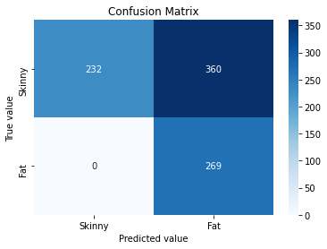
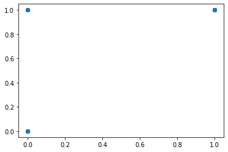
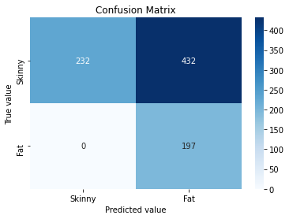

Exploring the different Logistic Mixed Model regressions which use the hime.LogisticRegression class as the BaseEstimator¶
[33]:
import os
import numpy as np
import pandas as pd
import seaborn as sns
import matplotlib.pyplot as plt
# from sklearn.datasets import make_regression
# from sklearn.metrics import r2_score
from sklearn.metrics import log_loss, roc_curve, roc_auc_score, confusion_matrix
from sklearn.preprocessing import MinMaxScaler
import session_info
import scipy
[2]:
import statsmodels.api as sm
# import statsmodels.formula.api as smf
[3]:
current_wd = os.getcwd()
os.chdir(current_wd.split("/notebook")[0])
# from hime.linear_model import LinearRegression, LassoRegression, RidgeRegression
from hime.multi_level_model import LogisticMixedRegression
os.chdir(current_wd)
[4]:
session_info.show(write_req_file=False)
[4]:
Click to view session information
----- hime 0.0.1 matplotlib 3.3.4 numpy 1.20.3 pandas 1.1.5 seaborn 0.11.1 session_info 1.0.0 sklearn 0.23.2 statsmodels 0.12.2 -----
Click to view modules imported as dependencies
PIL 8.3.1 anyio NA appnope 0.1.2 attr 21.2.0 babel 2.9.1 backcall 0.2.0 beta_ufunc NA binom_ufunc NA brotli NA casadi 3.5.5 certifi 2020.06.20 cffi 1.14.6 chardet 4.0.0 charset_normalizer 2.0.0 cycler 0.10.0 cython_runtime NA dateutil 2.8.2 decorator 5.0.9 defusedxml 0.7.1 idna 3.1 ipykernel 6.0.3 ipython_genutils 0.2.0 jedi 0.18.0 jinja2 3.0.1 joblib 1.0.1 json5 NA jsonschema 3.2.0 jupyter_server 1.10.1 jupyterlab_server 2.6.1 kiwisolver 1.3.1 markupsafe 2.0.1 matplotlib_inline NA mpl_toolkits NA nbclassic NA nbformat 5.1.3 nbinom_ufunc NA packaging 21.0 parso 0.8.2 patsy 0.5.1 pexpect 4.8.0 pickleshare 0.7.5 pkg_resources NA prometheus_client NA prompt_toolkit 3.0.19 ptyprocess 0.7.0 pvectorc NA pygments 2.9.0 pyparsing 2.4.7 pyrsistent NA pytz 2021.1 requests 2.26.0 scipy 1.7.0 send2trash NA six 1.16.0 sniffio 1.2.0 socks 1.7.1 storemagic NA swig_runtime_data4 NA terminado 0.10.1 tornado 6.1 traitlets 5.0.5 urllib3 1.26.6 wcwidth 0.2.5 websocket 0.57.0 zmq 22.1.0
----- IPython 7.25.0 jupyter_client 6.1.12 jupyter_core 4.7.1 jupyterlab 3.1.1 notebook 6.4.0 ----- Python 3.8.10 (default, May 19 2021, 11:01:55) [Clang 10.0.0 ] macOS-10.16-x86_64-i386-64bit ----- Session information updated at 2021-12-08 16:09
Make X and y data¶
[5]:
data = sm.datasets.get_rdataset('dietox', 'geepack').data
[6]:
data = data.assign(Weight_bin = (data["Weight"] > 40).astype(int))
Note: NumExpr detected 12 cores but "NUMEXPR_MAX_THREADS" not set, so enforcing safe limit of 8.
NumExpr defaulting to 8 threads.
[7]:
data.head()
[7]:
| Pig | Evit | Cu | Litter | Start | Weight | Feed | Time | Weight_bin | |
|---|---|---|---|---|---|---|---|---|---|
| 0 | 4601 | Evit000 | Cu000 | 1 | 26.5 | 26.50000 | NaN | 1 | 0 |
| 1 | 4601 | Evit000 | Cu000 | 1 | 26.5 | 27.59999 | 5.200005 | 2 | 0 |
| 2 | 4601 | Evit000 | Cu000 | 1 | 26.5 | 36.50000 | 17.600000 | 3 | 0 |
| 3 | 4601 | Evit000 | Cu000 | 1 | 26.5 | 40.29999 | 28.500000 | 4 | 1 |
| 4 | 4601 | Evit000 | Cu000 | 1 | 26.5 | 49.09998 | 45.200001 | 5 | 1 |
[8]:
df_train = data.sample(frac=0.8, random_state=69420)
df_test = data.drop(df_train.index)
[9]:
df_train.shape, df_test.shape
[9]:
((689, 9), (172, 9))
Fit the romeo LinearMixedRegression¶
[10]:
mixed_dict = {"target": "Weight_bin",
"fixed_effect": "Time",
"grouping_var": "Pig",
"random_slope": "Time"}
[11]:
def unpack_X(df, fixed_effect, grouping_var, random_slope, target):
X=df[fixed_effect]
u=df[grouping_var].unique()
random_slope_array=df[random_slope]
y=df[target]
return X, y, u, random_slope
[12]:
# unpack_X(df_train, **mixed_dict)
[13]:
reg = LogisticMixedRegression(fit_intercept=True,
normalize=True).fit(X=data[[mixed_dict["fixed_effect"], mixed_dict["grouping_var"]]],
y=data[mixed_dict["target"]],
verbose=False,
kwargs=mixed_dict)
[14]:
reg.u
[14]:
array([4601, 4602, 4603, 4605, 4641, 4643, 4645, 4756, 4757, 4759, 4760,
4813, 4814, 4815, 4817, 4854, 4856, 4857, 4858, 5389, 5392, 5497,
5500, 5501, 5502, 5524, 5527, 5528, 5578, 5581, 5582, 5850, 5851,
5852, 5862, 5865, 5866, 6055, 6056, 6057, 6058, 6207, 6208, 6211,
6284, 6287, 6288, 6430, 6432, 6433, 6909, 6910, 6912, 8049, 8050,
8051, 8053, 8139, 8141, 8142, 8144, 8191, 8192, 8193, 8195, 8269,
8270, 8271, 8273, 8437, 8439, 8442])
[15]:
reg.intercept_
[15]:
144.81219887399047
[16]:
reg.summary_
[16]:
| coef | |
|---|---|
| intercept | 144.812199 |
| Time | 30.775826 |
| 4601 | -252.589299 |
| 4602 | -252.589299 |
| 4603 | -252.589299 |
| ... | ... |
| 8271 | -252.589299 |
| 8273 | -252.589299 |
| 8437 | -252.589299 |
| 8439 | -252.589299 |
| 8442 | -283.100461 |
74 rows × 1 columns
[17]:
# reg.fit_evaluation_.round(3)
[18]:
intercept = reg.intercept_
coefs = reg.coef_
Plot the target vs the fitted values¶
[19]:
reg.fitted_values
[19]:
0 -221.813473
1 -191.037647
2 -160.261821
3 -129.485994
4 -98.710168
...
856 -36.893851
857 -6.118025
858 24.657801
859 55.433627
860 86.209454
Length: 861, dtype: float64
[20]:
_ = plt.scatter(reg.fitted_values, data[mixed_dict["target"]])

[22]:
reg.fitted_values
[22]:
0 -221.813473
1 -191.037647
2 -160.261821
3 -129.485994
4 -98.710168
...
856 -36.893851
857 -6.118025
858 24.657801
859 55.433627
860 86.209454
Length: 861, dtype: float64
[23]:
def sigmoid(z):
# Note it might be necessary to replace the np.exp with casadi version
"""
Compute the sigmoid of z
Arguments:
z -- A scalar or numpy array of any size.
Return:
s -- sigmoid(z)
"""
s = 1 / (1 + np.exp(-z))
return s
[25]:
sigmoid(reg.fitted_values).round(1)
[25]:
0 0.0
1 0.0
2 0.0
3 0.0
4 0.0
...
856 0.0
857 0.0
858 1.0
859 1.0
860 1.0
Length: 861, dtype: float64
[26]:
c_mat = confusion_matrix(sigmoid(reg.fitted_values).round(1), data[mixed_dict["target"]])
[29]:
cmap='Blues'
categories=["Skinny", "Fat"]
_ = sns.heatmap(c_mat,
annot=True,
fmt="",
cmap=cmap,
# cbar=cbar,
xticklabels=categories,
yticklabels=categories
)
_ = plt.title("Confusion Matrix")
# _ = plt.xlabel(f'Predicted value\n\nAccuracy={summary_df["Accuracy"].values[0]}\nSensitivity={summary_df["Sensitivity"].values[0]}\nSpecificity={summary_df["Specificity"].values[0]}\nF1 Score={summary_df["F1"].values[0]}')
_ = plt.xlabel(f'Predicted value')
_ = plt.ylabel("True value")

[35]:
reg.fitted_values
[35]:
0 -221.813473
1 -191.037647
2 -160.261821
3 -129.485994
4 -98.710168
...
856 -36.893851
857 -6.118025
858 24.657801
859 55.433627
860 86.209454
Length: 861, dtype: float64
[ ]:
[58]:
tmp = pd.DataFrame(scipy
.special
.logit(MinMaxScaler()
.fit_transform(reg
.fitted_values
.replace([np.inf, -np.inf], np.nan, inplace=False)
.dropna()
.to_numpy()
.reshape(-1, 1))).round(1))
[60]:
# MinMaxScaler().fit_transform(reg.fitted_values.to_numpy().reshape(-1, 1))
[61]:
tmp.head()
[61]:
| 0 | |
|---|---|
| 0 | -1.5 |
| 1 | -1.1 |
| 2 | -0.8 |
| 3 | -0.5 |
| 4 | -0.3 |
[62]:
(tmp > 1).astype(int)
[62]:
| 0 | |
|---|---|
| 0 | 0 |
| 1 | 0 |
| 2 | 0 |
| 3 | 0 |
| 4 | 0 |
| ... | ... |
| 856 | 0 |
| 857 | 0 |
| 858 | 0 |
| 859 | 1 |
| 860 | 1 |
861 rows × 1 columns
[63]:
_ = plt.scatter((tmp > 1).astype(int), data[mixed_dict["target"]])

[64]:
c_mat = confusion_matrix((tmp > 1).astype(int), data[mixed_dict["target"]])
[65]:
cmap='Blues'
categories=["Skinny", "Fat"]
_ = sns.heatmap(c_mat,
annot=True,
fmt="",
cmap=cmap,
# cbar=cbar,
xticklabels=categories,
yticklabels=categories
)
_ = plt.title("Confusion Matrix")
# _ = plt.xlabel(f'Predicted value\n\nAccuracy={summary_df["Accuracy"].values[0]}\nSensitivity={summary_df["Sensitivity"].values[0]}\nSpecificity={summary_df["Specificity"].values[0]}\nF1 Score={summary_df["F1"].values[0]}')
_ = plt.xlabel(f'Predicted value')
_ = plt.ylabel("True value")

[ ]:
stop!
With the fitted model attempt to predict the test data¶
[ ]:
y_pred = reg.predict(df_test.filter(regex="feat"))
y_pred.head(2)
[ ]:
y_test = df_test[["target"]]
y_test.head(2)
Calculate the r2 between the predicted vs the real scores¶
[ ]:
r_sq = r2_score(y_test["target"],
y_pred)
r_sq
Plot the predicted vs the real values¶
[ ]:
_ = plt.figure(figsize=(12, 7))
_ = plt.plot(y_test["target"],
y_pred,
'o',
# label='original data'
)
_ = plt.annotate(text = f"R-squared = {round(r_sq, 3)}",
xy=(100, -140),)